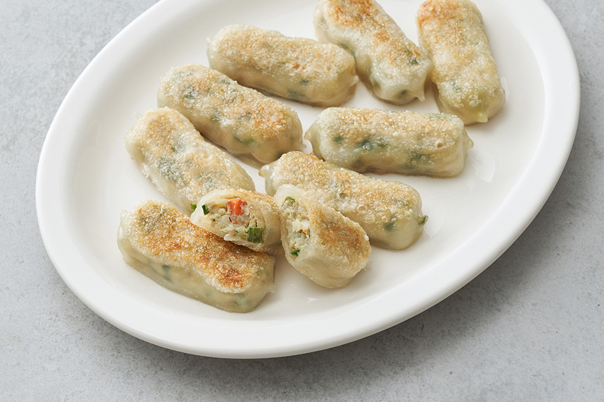

-돼지고기,우유,밀,대두,쇠고기,닭고기,조개류(바지락,모시조개,굴 포함)함유
-본 제품은 알류,잣,메밀,땅콩,고등어,게,새우,복숭아,토마토,아황산류,호두,오징어,조개류(전복,홍합 포함)를 사용한
제품과 같은 제조시설에서 제조하고 있습니다.
구매수량

날개가 없어 끝까지 쫀득
[쉐푸드] 쫄깃롤만두
쉐푸드는 롯대푸드에서 운영하는 가정 간편식 브랜드예요. 전문 셰프의 노하우를 담아 알차고 든든한 음식을 선보이고 있죠. 이번에는 날개
없이 만들어 끝까지 쫀득하게 먹을 수 있는 쫄깃롤만두를 준비했어요. 감자 전분을 함유해 쫄깃한 만두피 속 국내산 돼지고기와 다채로운 야채를
알차게 채웠답니다. 한입 베어 물면 톡 터지는 육즙 사이로 마늘의 깊은 감칠맛이 느껴지는 것이 특징이지요. 든든한 2봉 묶음 구성이어서
온 가족을 위한 간식으로 제격이랍니다.
Kurly's Tip
조리법
찜기 조리 시 : 찜기에 김이 오르면 냉동상태의 롤만두를 겹치지 않게 놓고, 약 5분간 쪄주세요
프라이팬 조리 시 : 잘 달구어진 프라이팬에 기름을 두른 후, 냉동상태의 롤만두를 올려주세요. 중불에서 약 7분간 뒤집어 가며 구워줍니다
에어프라이어 조리 시 : 냉동상태의 롤만두를 에어프라이어에 겹치지 않게 넣은 후, 기름을 골고루 발라주세요. 180°에서 약 10분간 조리하면 완성입니다